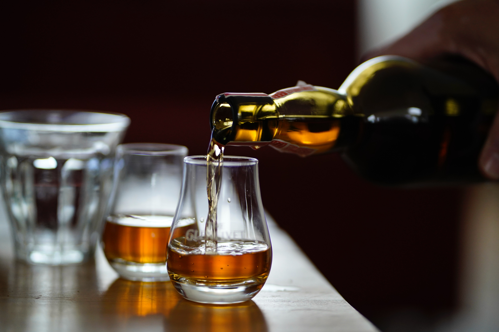

스코틀랜드에서 유래한 증류주. 대표적인 증류주로서 양주의 대명사다. 다만 칵테일을 주조할 때 기주로는 상대적으로 덜 쓰인다. 값이 비싼 편이고 그냥 마시는 것이 더 좋기 때문이다. 또한 스피리츠 중에서는 특유의 향이나 맛이 강한 편이라 조합하기가 까다로운 것도 이유 중 하나. 보드카가 무색, 무취, 무향으로 칵테일 베이스로는 상당히 널리 사용되는 것과 대조적이다. 때문에 위스키가 베이스인 칵테일의 경우에는 비교적 레시피가 상당히 단순한 경향을 보인다.
본래 18세기경 스코틀랜드에서 보리를 증류하여 만들어낸 술이다. 현대에 이르러 위스키의 제법이 세계 곳곳에 소개되면서 보리뿐만 아니라 옥수수나 밀, 귀리 등 어떠한 곡식이든 발효시켜 증류한 후에 나무통에서 숙성시킨 술은 위스키라고 이름 붙이게 되나 본래는 스코틀랜드에서 보리를 이용하여 만든 술만을 위스키라고 칭할 수 있다.
보리를 이용해서 만드므로 이게 와전되어서 '맥주를 증류해서 만든다'는 인식이 있을 수 있다. 물론 위스키의 원료인 보리술도 '맥주'인 것은 사실이다. 다만, 이 '맥주'는 일반적인 맥주와는 다른데 가장 큰 차이는 바로 홉. 위스키 원료용 맥주에는 호프를 넣지 않는다.
전체적으로 기본적인 가격대가 비싼데, 한국에 들어오면서 관세 + 주세 + 교육세가 붙어서 더 비싸지는 것이다. 게다가 바에 가서 먹으려면 다시 납품가의 13%에 해당하는 개별소비세와 교육세가 또 붙고 거기에 10%인 부가가치세, 그리고 바 자체에서 판매 마진을 위해 붙인 비용까지 덕지덕지 붙어서 미친듯이 비싸진다. 일단 바에서는 최소 매장의 2배 가격이라고 보면 된다. 때문에 위스키 애호가들은 집에서 사다 먹는 경우가 많다.
